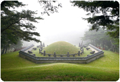
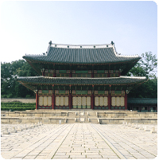
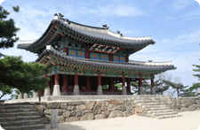
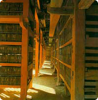

석굴암은 서기 751년 신라 경덕왕 때 당시 재상이었던 김대성이 창건하기 시작하여 서기 774년인 신라 혜공왕 때 완공하였으며, 건립 당시의 명칭은 석불사로 칭하였다. 석굴암의 석굴은 백색의 화강암재를 사용하여 토함산 중턱에 인공으로 석굴을 축조하고 그 내부 공간에는 본존불인 석가여래불상을 중심으로 그 주벽에 보살상 및 제자상과 금강역사상, 천왕상 등 총 39체의 불상을 조각하였다. 석굴암의 석굴은 장방형의 전실과 원형의 주실이 통로로 연결되어 있는데 360여 개의 판석으로 원형주실의 궁륭천장 등을 교묘하게 구축한 건축 기법은 세계에 유례가 없다.

2009년 유네스코 세계유산에 등재된 ‘조선왕릉’은 우리나라에 소재한 40기의 조선시대 왕릉으로 구성되어 있다. 조선왕조(1392~1910)는 태조에서 마지막 순종에 이르기까지 519년간 이어져 왔다. 왕위에 올랐던 27명의 왕과 그 왕비뿐 아니라 사후 추존된 왕과 왕비가 묻힌 총 42기의 왕릉이 있으며, 이 중 40기는 대한민국에, 2기는 북한에 위치해 있다. 조선시대의 왕릉은 조선시대의 국가통치 이념인 유교와 그 예법에 근거하여 시대에 따라 다양한 공간의 크기, 문인과 무인 공간의 구분, 석물의 배치, 기타 시설물의 배치 등이 특색을 띠고 있다.

창덕궁은 조선왕조 제3대 태종 5년(1405) 경복궁의 이궁으로 지어진 궁궐이며 창건시 창덕궁의 정전인 인정전, 편전인 선정전, 침전인 희정당, 대조전 등 중요 전각이 완성되었다. 그 뒤 태종 12년(1412)에는 돈화문이 건립 되었고 세조 9년(1463)에는 약 6만2천평이던 후원을 넓혀 15만여평의 규모로 궁의 경역을 크게 확장하였다. 임진왜란 때 소실된 것을 선조 40년(1607)에 중건하기 시작하여 광해군 5년(1613)에 공사가 끝났으나 다시 1623년의 인조반정때 인정전을 제외한 대부분의 전각이 소실되었다가 인조 25년(1647)에 복구되었다. 그 후에도 여러 번 화재가 있었으며, 1917년에 대조전 과 희정당 일곽이 소실되어 1920년에 경복궁의 교태전·강녕전 등 많은 건물을 철거하여 창덕궁으로 이건하였다

남한산성은 극동아시아 여러 지역의 영향을 바탕으로 다양한 군사 방어 기술을 종합적으로 구현하고 있는 조선왕조의 비상시 임시 수도로서, 한국의 독립성 및 한국 역사상 다양한 종교·철학이 조화롭게 공존해온 가치를 상징하는 유산이다. 동 유산은 본성(한봉성과 봉함성을 포함)과 신남성(동서돈대)으로 구성된 연속유산으로 16세기에서 18세기에 이르는 기간 동안 동아시아 국가들간 축성술과 도시 계획이 상호 교류한 증거이다. 또한 7세기부터 19세기까지 축성술의 시대별 발달 단계와 무기 체계의 변화상을 잘 보여주며 지금까지 주민들이 거주하고 있는 살아있는 유산으로서 가치를 보유한다.

해인사 장경판전은 13세기에 만들어진 세계적 문화유산인 고려 대장경판 8만여 장을 보존하는 보고로서 해인사의 현존 건물 중 가장 오래된 건물이다. 장경판전은 정면 15칸이나 되는 큰 규모의 두 건물을 남북으로 나란히 배치하였다. 장경판전 남쪽의 건물을 수다라장, 북쪽의 건물을 법보전이라 하며 동쪽과 서쪽에 작은 규모의 동·서사간판전이 있다. 건물을 간결한 방식으로 처리하여 판전으로서 필요로 하는 기능만을 충족시켰을 뿐 장식적 의장을 하지 않았으며, 전·후면 창호의 위치와 크기가 서로 다르다. 통풍의 원활, 방습의 효과, 실내 적정 온도의 유지, 판가의 진열 장치 등이 매우 과학적이며, 합리적으로 되어 있는 점은 대장경판이 지금까지 온전하게 보존되어 있는 중요한 이유 중의 하나라고 평가받고 있다.